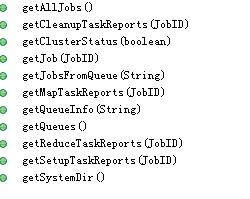
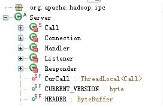
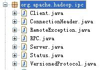
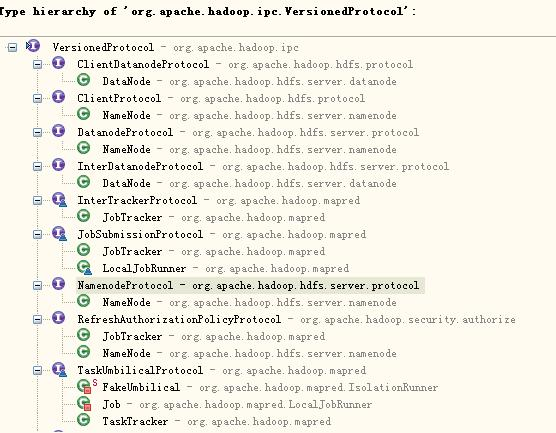

【hadoop代码笔记】通过JobClient对Jobtracker的调用详细了解Hadoop RPC
Hadoop的各个服务间，客户端和服务间的交互采用RPC方式。关于这种机制介绍的资源很多，也不难理解，这里不做背景介绍。只是尝试从Jobclient向JobTracker提交作业这个最简单的客户端服务器交互的代码中，去跟踪和了解下RPC是怎么被使用的。不同于准备发表博客时搜索的几篇博文，试图通过一种具体的场景来介绍，属于比较初级。其他DataNode和Namenode之间，Tasktracker和JobTracker之间的交互基本也都一样。为了引用的代码篇幅尽可能少，忽略了代码中写日志（包括Metrics）、某些判断等辅助代码。
1 RPC客户端请求（从JobClient的jobSubmitClient 入手）
Jobclient包含一个JobSubmissionProtocol jobSubmitClient类型的句柄，从作业提交一节的介绍中看到Jobclient的计划所有重要操作都是通过jobSubmitClient来完成的。包括

JobSubmissionProtocol Outline
所有这些方法都在JobSubmissionProtocol接口中定义。在0.20.1的时候已经到Version 20了，在2.2.0好像到了Version 40了,说明功能一直在增强。 客户端的某个方法调用如何会调用到服务端的方法呢？在客户端机器上调用JobClient的getAllJobs(),怎么调用到了服务端JobTracker的getAllJobs()。这也是我尝试讲明白的核心内容。为了体现代码的一步一步分析总结在最后。可能循序渐进的作用没起到，还会笔记读起来笔记乱，感受有点不太好可能:-(。 首先看客户端JobClient中的jobSubmitClient初始化方法。在JobClient的init方法中判断不是local的方式则会调用createRPCProxy方法，进而调用RPC的getProxy方法。方法连接对应IP的服务器。比较客户端和服务端的RPC版本一致，返回一个JobSubmissionProtocol类型的句柄，抛出VersionMismatch异常。
private JobSubmissionProtocol createRPCProxy(InetSocketAddress addr,
Configuration conf) throws IOException {
return (JobSubmissionProtocol) RPC.getProxy(JobSubmissionProtocol.class,
JobSubmissionProtocol.versionID, addr, getUGI(conf), conf,
NetUtils.getSocketFactory(conf, JobSubmissionProtocol.class));
}
public static VersionedProtocol getProxy(Class< > protocol,
long clientVersion, InetSocketAddress addr, UserGroupInformation ticket,
Configuration conf, SocketFactory factory) throws IOException {
VersionedProtocol proxy =
(VersionedProtocol) Proxy.newProxyInstance(
protocol.getClassLoader(), new Class[] { protocol },
new Invoker(addr, ticket, conf, factory));
long serverVersion = proxy.getProtocolVersion(protocol.getName(),
clientVersion);
if (serverVersion == clientVersion) {
return proxy;
} else {
throw new VersionMismatch(protocol.getName(), clientVersion,
serverVersion);
}
}
注意到调用了java的反射代理在构建VersionedProtocol的时候ProxynewProxyInstance方法初始化了一个Invoker类型的对象。 该对象是org.apache.hadoop.ipc.RPC.包下Server类的一个内部类。
static class Invoker implements InvocationHandler
这下明白了！基于java的reflect机制提供的一种Proxy使用方式。InvocationHandler这个Interface的作用就是把proxy 上的方法调用派发到实现了InvocationHandler的类上来。即Jobclient上中jobSubmitClient的任何调用都会派发到这个Invoker上来。
那么Invoker中做了什么事情呢？Invoker类实现了InvocationHandler接口定义的唯一的invoke方法。只是把传入的调用信息，包括方面名，方法参数封装为一个invocation对象，调用用Client client对象的call方法来执行操作。
public Object invoke(Object proxy, Method method, Object[] args)
throws Throwable {
ObjectWritable value = (ObjectWritable)
client.call(new Invocation(method, args), address,
method.getDeclaringClass(), ticket);
return value.get();}
了解Client的call方法，该方法的主要作用是把参数发送给指定服务端地址上的IPC server。并获取结果。构建一个Call对象，封装了请求参数（其实是Invocation封装了方法和参数的对象），创建一个连接到IPC服务器的connection，然后发送出去。（client发送请求还是有些业务的，包括Client下的几个内部类的工作，在此略去）
public Writable call(Writable param, InetSocketAddress addr,
Class< > protocol, UserGroupInformation ticket)
{
Call call = new Call(param);
Connection connection = getConnection(addr, protocol, ticket, call);
connection.sendParam(call); // send the parameter
return call.value;
}
客户端的主要过程总结如下：客户端Jobclient的创建一个JobSubmissionProtocol jobSubmitClient，jobSubmitClient的所有请求都会通过Invoker封装成一个请求，通过Client的call方法发送到服务端。
2 RPC服务端处理(看Jobtracker的interTrackerServer响应请求)
接下来看法服务器是如何接收请求，Client的call将请求发送到什么样的服务器？服务器如何解释这些请求，如何响应请求的。
服务端JobTracker实现了JobSubmissionProtocol接口，因此提供了JobSubmissionProtocol定义的所有方法
public class JobTracker implements MRConstants, InterTrackerProtocol,
JobSubmissionProtocol, TaskTrackerManager, RefreshAuthorizationPolicyProtocol
在JobTracker内包含一个类型org.apache.hadoop.ipc.Server的的实例interTrackerServer ，该实例其实是响应客户端的的RPC调用的服务实例。
this.interTrackerServer = RPC.getServer(this, addr.getHostName(), addr.getPort(), handlerCount, false, conf);
查看RPC的getServer方法
public static Server getServer(final Object instance, final String bindAddress, final int port,
final int numHandlers,
final boolean verbose, Configuration conf)
throws IOException {
return new Server(instance, conf, bindAddress, port, numHandlers, verbose);
}
再往下看其实Server的构造函数，就是在某个Ip和端口上监听，响应客户端发起的请求。多么典型的客户端服务器模式呀。代码看上去多么想Socket通信那一套呀。看到了bindAddress，看到了port，还看到socketSendBufferSize。没错！
protected Server(String bindAddress, int port,
Class< extends Writable> paramClass, int handlerCount,
Configuration conf, String serverName)
throws IOException {
this.bindAddress = bindAddress;
this.conf = conf;
this.port = port;
this.paramClass = paramClass;
this.handlerCount = handlerCount;
this.socketSendBufferSize = 0;
this.maxQueueSize = handlerCount * MAX_QUEUE_SIZE_PER_HANDLER;
this.callQueue = new LinkedBlockingQueue<Call>(maxQueueSize);
this.maxIdleTime = 2*conf.getInt("ipc.client.connection.maxidletime", 1000);
this.maxConnectionsToNuke = conf.getInt("ipc.client.kill.max", 10);
this.thresholdIdleConnections = conf.getInt("ipc.client.idlethreshold", 4000);
// Start the listener here and let it bind to the port
listener = new Listener();
this.port = listener.getAddress().getPort();
this.rpcMetrics = new RpcMetrics(serverName,
Integer.toString(this.port), this);
this.tcpNoDelay = conf.getBoolean("ipc.server.tcpnodelay", false);
// Create the responder here
responder = new Responder();
}
同时不小心注意到Server类的outline阵容还是很宏大的，除了一长串的方法外，还包括Call, Connection, Handler,Listener, responder 五个内部类，猜就是这些协作来完成Server的服务响应处理。

ipc_server outline 同时注意到Server中包含的如下几个重要的实例private BlockingQueue<Call> callQueue; // queued calls
private List<Connection> connectionList =
Collections.synchronizedList(new LinkedList<Connection>());
private Listener listener = null;
private Responder responder = null;
private Handler[] handlers = null;
再看看Server的start（）方法
public synchronized void start() throws IOException {
responder.start();
listener.start();
handlers = new Handler[handlerCount];
for (int i = 0; i < handlerCount; i++) {
handlers[i] = new Handler(i);
handlers[i].start();
}
}
其中，在Server的构造函数中看到了两个差不多能猜到其功能的东西：Listener & Responder。从命名上几乎就能猜到，他们分别是监听用户请求和响应用户请求的线程？应该是线程吧？居然猜对了！
先看下Listener。构造函数如下
public Listener() throws IOException {
address = new InetSocketAddress(bindAddress, port);
// Create a new server socket and set to non blocking mode
acceptChannel = ServerSocketChannel.open();
acceptChannel.configureBlocking(false);
// Bind the server socket to the local host and port
bind(acceptChannel.socket(), address, backlogLength);
port = acceptChannel.socket().getLocalPort(); //Could be an ephemeral port
// create a selector;
selector= Selector.open();
// Register accepts on the server socket with the selector.
acceptChannel.register(selector, SelectionKey.OP_ACCEPT);
}
重点看下线程的业务方法，即其run方法做了些啥。方法虽然很长，但是业务很典型，在服务端监听，收到数据就接收。
public void run() {
SERVER.set(Server.this);
while (running) {
SelectionKey key = null;
selector.select();
Iterator<SelectionKey> iter = selector.selectedKeys().iterator();
while (iter.hasNext()) {
key = iter.next();
iter.remove();
try {
if (key.isValid()) {
if (key.isAcceptable())
doAccept(key);
else if (key.isReadable())
doRead(key);
}
}
接着看下接受数据的 doAccept(SelectionKey key)和doRead(SelectionKey key)方法。
doAccept做的事情是把每一个数据连接的请求绑定到一个Connection对象上，并把Connection全部添加到connectionList集合中；doRead做的事情是对每个Connection执行readAndProcess操作。
void doAccept(SelectionKey key)
{
Connection c = null;
ServerSocketChannel server = (ServerSocketChannel) key.channel();
// accept up to 10 connections
for (int i=0; i<10; i++) {
SocketChannel channel = server.accept();
SelectionKey readKey = channel.register(selector, SelectionKey.OP_READ);
c = new Connection(readKey, channel, System.currentTimeMillis());
readKey.attach(c);
synchronized (connectionList) {
connectionList.add(numConnections, c);
numConnections++;
}
}
void doRead(SelectionKey key)
{
Connection c = (Connection)key.attachment();
c.setLastContact(System.currentTimeMillis());
count = c.readAndProcess();
}
需要关注下org.apache.hadoop.ipc.Server.Connection类。重点看listener doRead 中调用的readAndProcess方法
data = ByteBuffer.allocate(dataLength);
count = channelRead(channel, data);
if (headerRead) {
processData();
data = null;
return count;
} else {
processHeader();
headerRead = true;
data = null;
}
authorize(user, header);
其中的processHeader()作用是解析出通信的protocol类
header.readFields(in);
String protocolClassName = header.getProtocol();
protocol = getProtocolClass(header.getProtocol(), conf);
processData的主要代码如下：
int id = dis.readInt();
Writable param = ReflectionUtils.newInstance(paramClass, conf); param.readFields(dis);
Call call = new Call(id, param, this);
callQueue.put(call);
读取调用Id，从读取的数据中构建参数，并构造一个Call对象，放置到BlockingQueue 类型的集合中callQueue。 至此Listener的所有功能就是接收客户端发起的请求，构造Call对象并放置到队列中等待处理。 接下来是发送响应的Responder类。 重点是processResponse，是真正的写response的地方，即把执行结果写会对应的channel。
private boolean processResponse(LinkedList<Call> responseQueue,
boolean inHandler)
{
call = responseQueue.removeFirst();
SocketChannel channel = call.connection.channel;
int numBytes = channelWrite(channel, call.response);
}
Handler是处理请求的线程。是对队列中的每个call进行处理的类。前面看Server包含的实例的时候看到了，Server包含一个Handler数组，在Server的start方法中启动了Listener，Responder线程，同时初始化了handlerCount个Handler线程并且启动。 主要还是看run方法。主要是从请求队列callQueue中逐个取出call了，并进行处理。处理过程即，对每个call，执行Server的call[ 方法，（实际的call方法是从org.apache.hadoop.ipc.RPC.Server，继承了org.apache.hadoop.ipc.Server，不是一个Server哦！这个在后面RPC类中会讲到）并调用Responder方法doRespond，把结果返回。
while (running)
{
final Call call = callQueue.take(); // pop the queue; maybe blocked here
CurCall.set(call);
value = Subject.doAs(call.connection.user,
new PrivilegedExceptionAction<Writable>() {
@Override
public Writable run() throws Exception {
// make the call
return call(call.connection.protocol,
call.param, call.timestamp);
}
}
);
CurCall.set(null);
setupResponse(buf, call,
(error == null) Status.SUCCESS : Status.ERROR,
value, errorClass, error);
responder.doRespond(call);
}
调用的setupResponse方法
private void setupResponse(ByteArrayOutputStream response,
Call call, Status status,
Writable rv, String errorClass, String error)
DataOutputStream out = new DataOutputStream(response);
out.writeInt(call.id); // write call id
out.writeInt(status.state); // write status
rv.write(out);
call.setResponse(ByteBuffer.wrap(response.toByteArray()));
核心就一句，把执行结果写到Call中去。 顺便看下上面方法调用的Responder的doRespond方法，即把经过handler处理的带有结果的call放到对应的响应队列中，等待responder线程来逐个返回给客户端，注意看到一个，如果队列中只有一个对象时，直接调用processResponse触发把结果翻过给客户端。
void doRespond(Call call) throws IOException {
{
call.connection.responseQueue.addLast(call);
if (call.connection.responseQueue.size() == 1) {
processResponse(call.connection.responseQueue, true);
}
}
}
即handler完成call之后就开始向客户端写call结果，但是结果可能太多，无法通过一次性发送完毕，而发送之后还要等待client接受完毕才能再发，如果现在handler在那里等待客户端接受完毕，然后再发，效率不高。解决办法是handler处理完毕之后，只向client发送一次处理结果。如果这一次将处理结果发送完毕，接下来就没有response的事情了，如果没有发送完毕，接下来response负责将剩下的处理结果发送给客户端。这样handler的并发量会大一些。详细可参照Responder线程的run方法和
writeSelector.select(PURGE_INTERVAL);
Iterator<SelectionKey> iter = writeSelector.selectedKeys().iterator();
while (iter.hasNext()) {
SelectionKey key = iter.next();
iter.remove();
if (key.isValid() && key.isWritable()) {
doAsyncWrite(key);
}
//在doAsyncWrite方法中，从key中获得Call，并对每个call执行processResponse方法。
private void doAsyncWrite(SelectionKey key)
Call call = (Call)key.attachment();
processResponse(call.connection.responseQueue, false))
至此观察到服务端的工作的主要过程是：
-
Server启动的时候，启动一个listener线程，一个Responder线程，若干个Handler线程。
-
Listener线程接受客户端发起的请求（在doAccept中接收请求，并且每个请求构建一个Connection，绑定到一个SelectionKey上），读取请求数据，根据请求数据构造call对象，将Call加入队列。
-
Handler线程从请求队列（callQueue）中获取每个Call，进行处理，把处理结果放到对应的connection的应答队列中）（responseQueue，通过调用responder.doRespond）。Responder线程检查负责把结果返回给客户端。（processResponse，把responseQueue队列的结果数据返回）
有一点需要继续关注一下，就是Handler中处理了客户端发起的请求，并且将结果通过Responder返回。但是并没有发现Handler是调用到了Jobtracker的方法。需要继续向下多看一点即可。 从代码看Handler的call方法调用的是org.apache.hadoop.ipc.Server.的抽象方法
public abstract Writable call(Class< > protocol, Writable param, long receiveTime)
实际调用是org.apache.hadoop.ipc.Server的子类org.apache.hadoop.ipc.RPC.Server的call方法从org.apache.hadoop.ipc.RPC.Server的call方法入手，该类在是RPC类的一个静态内部类。
//传入的param其实是一个Invocation对象。根据该对象的方面明，参数声明构造Method，调用Method，得到执行结果，根据返回值得类型，构造一个Writable的对象。
Writable call(Class< > protocol, Writable param, long receivedTime)
{
Invocation call = (Invocation)param;
Method method =
protocol.getMethod(call.getMethodName(),
call.getParameterClasses());
method.setAccessible(true);
Object value = method.invoke(instance, call.getParameters());
return new ObjectWritable(method.getReturnType(), value);
}
重点看这一句
Object value = method.invoke(instance, call.getParameters());
即最终是调用该instance上的对应名称的方法。而instance是那个实例呢？而从Server的构造方法中得到答案。
this.interTrackerServer = RPC.getServer(this, addr.getHostName(), addr.getPort(), handlerCount, false, conf);</pre>
即最终调用到JobTracker的对应方法。
3 主要流程总结
整个调用过程总结如下：根据接口JobSubmissionProtocol动态代理生成一个代理对象jobSubmitClient，调用这个代理对象的时候;用户的调用请求被RPC的Invoker捕捉到，然后包装成调用请求，序列化成数据流发送到服务端Jobtracker的interTrackerServer实例；服务端interTrackerServer从数据流中解析出调用请求，然后根据用户所希望调用的接口JobSubmissionProtocol，通过反射调用接口真正的实现对象Jobtracker，再把调用结果返回给客户端的jobSubmitClient。
4 主要类功能描述
至此根据Jobclient通过RPC方式向JobTracker请求服务的过程就描述完毕，到此主要内容应该介绍完毕。但是看到cover的代码，发现RPC的主要功能在里面了。

rpc package为了功能完整期间，在动态的串联这些类以为，把涉及到主要类的功能做个描述，其实大部分在前面代码中也有提到。
RPC类是对Server、Client的具体化。在RPC类中规定，客户程序发出请求调用时，参数类型必须是Invocation；从服务器返回的值类型必须是ObjectWritable。RPC类是对Server、Client的包装，简化用户的使用。如果一个类需充当服务器，只需通过RPC类的静态方法getServer获得Server实例，然后start。同时此类提供协议接口的实现。如果一个类充当客户端，可以通过getProxy或者waitForProxy获得一个实现了协议接口的proxy object，与服务器端交互。
- Server.Listener： RPC Server的监听者，用来接收RPC Client的连接请求和数据，其中数据封装成Call后PUSH到Call队列。
- Server.Handler： RPC Server的Call处理者，和Server.Listener通过Call队列交互。
- Server.Responder： RPC Server的响应者。Server.Handler按照异步非阻塞的方式向RPC Client发送响应，如果有未发送出的数据，交由Server.Responder来完成。
- Server.Connection： RPC Server数据接收者。提供接收数据，解析数据包的功能。
- Server.Call： 持有客户端的Call信息。 org.apache.hadoop.ipc.Client
- Client.ConnectionId：到RPC Server对象连接的标识
- Client.Call： Call调用信息。
- Client.ParallelResults： Call响应。 org.apache.hadoop.ipc.RPC
- RPC.Invoker 对InvocationHandler的实现，提供invoke方法，实现RPC Client对RPC Server对象的调用。 RPC.Invocation 用来序列化和反序列化RPC Client的调用信息。（主要应用JAVA的反射机制和InputStream/OutputStream）
5 VersionedProtocol的其他子接口
除了JobClient和Jobtracker之间通信的JobSubmissionProtocol外，最后查看下VersionedProtocol 的继承树

versionprotocol继承结构Hadoop中主要服务进程分别实现了各种接口，进而向外提供各种服务，其客户端通过RPC调用对应的服务。当然此处的客户端只是指调用上的客户端。 VersionedProtocol ：它是所有RPC协议接口的父接口，只有一个方法：getProtocolVersion（）。其子类接口的功能分别如下。 HDFS相关：
- ClientDatanodeProtocol ：一个客户端和datanode之间的协议接口，用于数据块恢复
- ClientProtocol ：client与Namenode交互的接口，所有控制流的请求均在这里，如：创建文件、删除文件等；
- DatanodeProtocol : Datanode与Namenode交互的接口，如心跳、blockreport等；
- NamenodeProtocol ：SecondaryNode与Namenode交互的接口。 Mapreduce相关
- InterDatanodeProtocol ：Datanode内部交互的接口，用来更新block的元数据；
- InnerTrackerProtocol ：TaskTracker与JobTracker交互的接口，功能与DatanodeProtocol相似；
- JobSubmissionProtocol ：JobClient与JobTracker交互的接口，用来提交Job、获得Job等与Job相关的操作；
- TaskUmbilicalProtocol ：Task中子进程与母进程交互的接口，子进程即map、reduce等操作，母进程即TaskTracker，该接口可以回报子进程的运行状态。